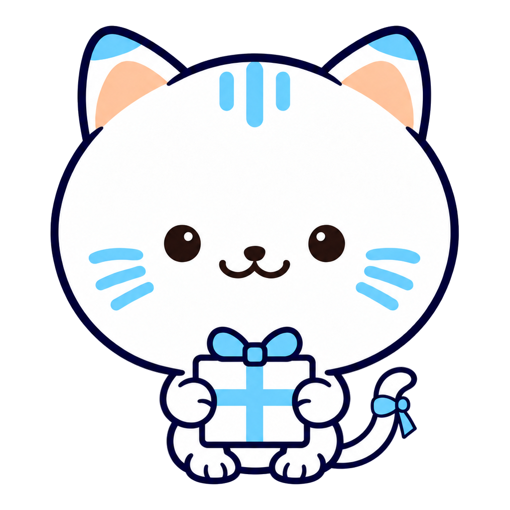
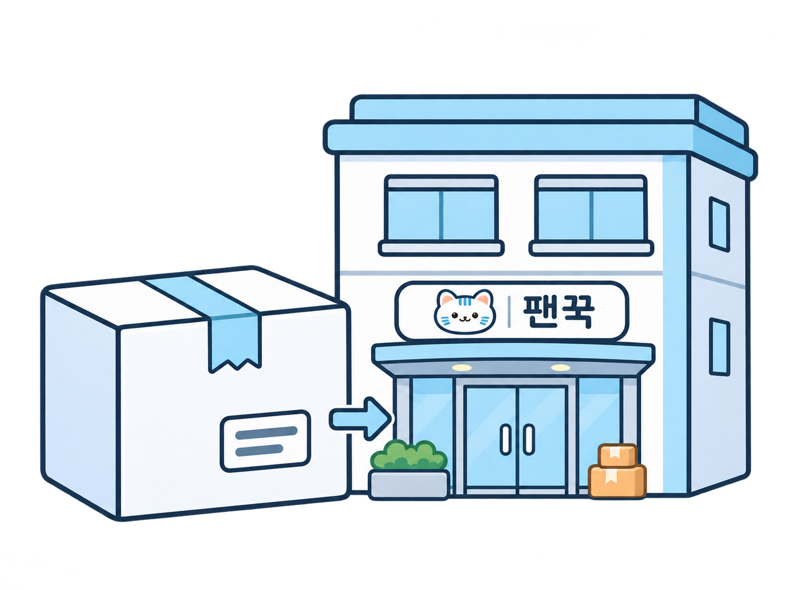
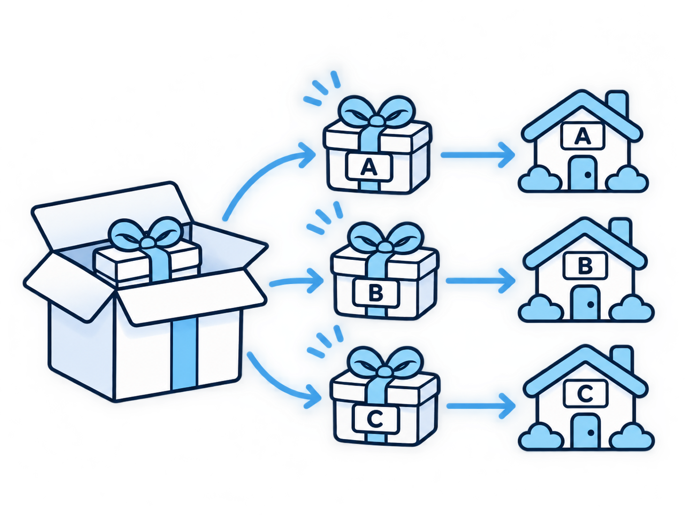

승인한 선물만
받아보세요.
팬이 선물을 보낼 때 승인을 요청해요.
선물 내용을 먼저 확인하고 받아보세요.
팬꾹에 도착한 선물은 검수를 거쳐
크리에이터에게 배송해요.
방송 늘 잘 보고 있어요.
좋아하시는 색으로 만들어 봤어요!
주소는 보호하고,
보관은 최소한으로.
평소에는 크리에이터의 주소를 암호화해 보관해요.
인증을 거쳐 사용할 때만 주소를 열어볼 수 있어요.
팬이 입력한 주소는 배송에 사용한 뒤 폐기해요.
보관하는 정보와 열람 기회를 줄여,
혹시 모를 정보 유출에도 피해를 줄이도록 설계했어요.
팬에게 선물을 보낼 땐,
팬꾹의 ‘팬에게 보내기’
선물 받을 팬들의 신청부터 배송까지.
팬꾹에서 한 번에 준비해 보세요.
신청 관리
선물함으로 신청을
한눈에 관리하세요.
선물함은 크리에이터가
선물 받을 팬들의 신청을 모으는 공간이에요.
선물함을 만들면 팬들이 신청할 수 있어요.
누가, 몇 명이나 신청했는지 확인하고 마감하세요.
달력과 스티커를 준비했어요.
- 1선물함 만들기크리에이터가 준비해요
- 2팬들이 신청받을 팬들이 모여요
- 3현황 확인 · 마감신청 내역을 보고 준비해요
선물 배송
팬들에게 보낼 선물,
모아서 보내세요.
팬마다 플랫폼으로 선물을 보내면 이용료가 쌓이고,
직접 택배를 보내면 거주지역이 드러날 수 있어요.
팬꾹에는 팬별로 준비한 선물을 큰 상자에 모아 보내세요.
팬꾹이 직접 나누어 팬들에게 각각 배송해요.
-
크리에이터
큰 상자 하나를 팬꾹으로 →
한 상자로 모아 보내요
팬별 선물에 닉네임을 적어
큰 상자에 담아 팬꾹으로 보내요. -
팬꾹 도착
크리에이터 → 팬꾹 큰 상자가 팬꾹에 도착해요

팬별 선물을 모아 보낸
큰 상자를 팬꾹에서 받아요. -
팬별 개별 배송
큰 상자 개봉 → 팬별 선물 발송 꺼낸 선물을 각각 배송해요

큰 상자를 열고 닉네임을 확인해
팬별 선물을 각 팬에게 보내요.
합리적인 비용으로 보내고,
집 주소와 거주지역도 보호하세요.
내 채널의 특징을
담아보세요.
프로필 사진과 배경 사진,
대표색을 직접 설정할 수 있어요.
팬덤 이름과 뱃지도 등록해
나만의 페이지를 만들어 보세요.
 하루별빛단
하루별빛단게임도 일상도 함께 이야기해요.
주고받은 선물과
감사 인사를 남겨보세요.
어떤 선물을 주고받았는지,
어떤 감사 인사를 나눴는지 다시 볼 수 있어요.
짧은 메시지로 고마움을 전하고
기록으로 남겨보세요.